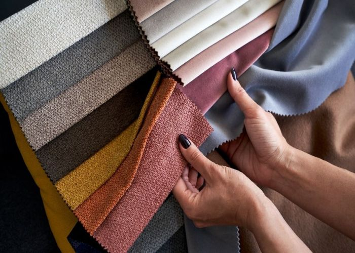
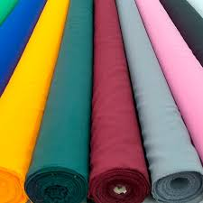
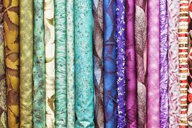

¡Bolsos amigables con el ambiente!
ReStitch se encarga de cuidar el medio ambiente creando bolsos con telas y prendas recicladas. Con nosotros, puedes volver a darle vida a aquellas telas olvidadas en tu armario.
¡ReStitch siempre será tu mejor opción!
Con variedad de tamaños. Escríbenos y personalizaremos tu bolso a tu gusto.



Misión
Nuestra misión es darle un segundo uso a la basura textil de las empresas "fast fashion" o incluso ropa como camisas, almohadas, cobijas o lo que quieras reutilizar para darles otra vida y con estilo.
Visión
Nuestra visión es ser la empresa confiable de moda y mantener nuestro catálogo a nuestro gusto y utilidad en la vida diaria. Aspiramos a expandir nuestros horizontes a otras objetos aparte de los bolsos.